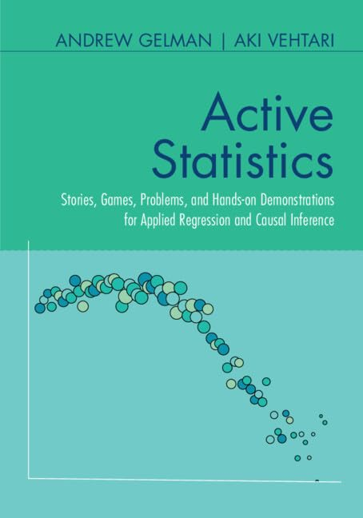

Web page for the book Active Statistics by Andrew Gelman and Aki Vehtari.
Published by Cambridge University Press in 2024 (March).
© Copyright by Andrew Gelman and Aki Vehtari 2024.
This book provides statistics instructors and students with complete classroom material for a one- or two-semester course on applied regression and causal inference. It is built around 52 stories, 52 class-participation activities, 52 hands-on computer demonstrations, and 52 discussion problems that allow instructors and students to explore in a fun way the real-world complexity of the subject. The book fosters an engaging ‘flipped classroom’ environment with a focus on visualization and understanding. The book provides instructors with frameworks for self-study or for structuring the course, along with tips for maintaining student engagement at all levels, and practice exam questions to help guide learning. Designed to accompany the authors’ previous textbook Regression and Other Stories, its modular nature and wealth of material allow this book to be adapted to different courses and texts or be used by learners as a hands-on workbook.
If you notice an error submit an issue or send an email.